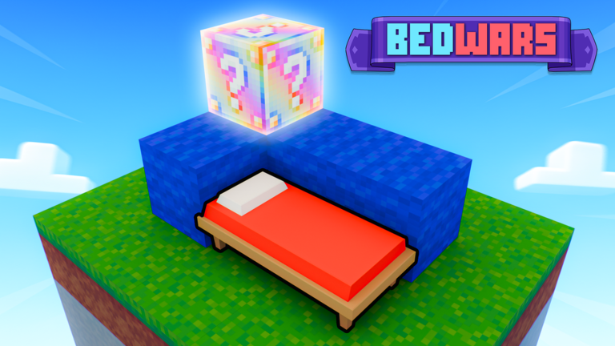
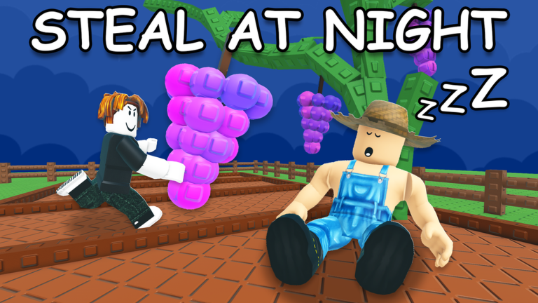
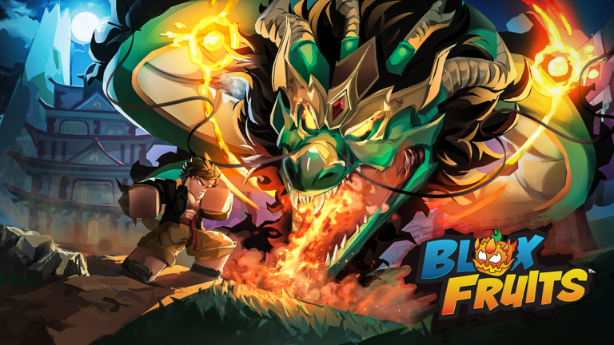

로블록스 여름방학 인기 이유 아이랑 할만한 체험 총정리
여름방학 되고 나서 아이 손에 들린 폰이나 태블릿 화면 넘겨다보면 온통 로블록스 얘기뿐이지 않으신가요? 저희 집도 마찬가지라 도대체 뭔 게임이길래 이러나 싶어서 한 번 제대로 파봤는데요, 파고 들어가 보니까 순위표부터 실제로 놀랍더라고요. 오늘은 로블록스가 요즘 왜 이렇게 인기인지 근거로만 짚어보고, 아이랑 같이 해볼 만한 체험까지 정리해볼게요.
로블록스, 진짜 이 정도로 인기였어? (2026년 7월 기준 순위)
2026년 7월 기준(2026년 8월 발표) 국내 모바일 게임 이용자 수(MAU) 순위에서 로블록스가 254만 명으로 1위를 차지했어요. 아이지에이웍스 모바일인덱스 자료인데, 2위 '블록 블라스트'(189만 명)를 60만 명 넘게 앞선 확실한 1위더라고요. 상위권을 나열하면 이렇습니다.
- 1위 로블록스 — 254만 명
- 2위 블록 블라스트 — 189만 명
- 3위 Pokémon GO — 173만 명
- 4위 브롤스타즈 — 170만 명
- 5위 로얄 매치 — 114만 명
6~7위권도 참고할 만한데요, '냥코 대전쟁'이 87만 명으로 세 단계나 뛰어 7위에 올랐대요. 순위표만 보면 로블록스는 이미 국내 압도적 1위인 셈이네요.
여름방학에 유독 터진 이유, 근거로만 짚어볼게요
로블록스가 여름방학에 유독 화제인 이유는 크게 세 가지로 정리돼요.
- 실제 순위 1위 — 위에서 본 것처럼 이미 압도적 1위라 화제성이 커요.
- 여름방학 시기와 겹침 — 국내 초중고 여름방학이 보통 7월 말부터 8월 중순까지 몰려 있어서, 아이들이 자유롭게 쓸 수 있는 시간이 늘어나는 시점과 맞물려요.
- 로블록스 자체 구조 — 로블록스 공식 소개 페이지를 보면 "무료로 가입하고 즐길 수 있고, 매일 수백만 명이 재미와 친구와의 연결, 협업을 위해 모인다"고 밝히고 있어요. 무료로 시작할 수 있는 데다 유저들이 직접 만든 체험이 셀 수 없이 많고, 친구랑 같은 체험에 동시 접속해서 놀 수 있는 게 핵심 구조더라고요.
이 세 가지가 겹치니까 여름방학이 로블록스 접속량이 몰리는 시즌이 되는 거거든요.
그래서 로블록스, '게임'이야 '맵'이야? — 공식 용어는 '체험'
로블록스 안에서 즐기는 개별 게임 하나하나는 공식적으로 '체험(Experience)'이라고 불러요. 공식 소개 페이지엔 장애물 코스부터 레이싱, 창작 시뮬레이션까지 전부 '체험(experiences)'으로 묶어 설명돼 있어요. 그러니까 로블록스는 게임 한 편이 아니라 그 자체로 플랫폼이고, 그 안에 수천만 개 체험이 들어있답니다. 다만 부모 입장에선 '체험'보다 '게임'·'맵'이 더 익숙하니, 이 글에서도 편하게 같이 부를게요.
아이와 함께 즐기기 좋은 체험(게임) 6가지
제가 실시간 인기 차트를 직접 확인해서, 아이랑 같이 해도 무난한 체험만 골라봤어요(2026년 8월 8일 확인 기준, 순위는 실시간이라 바뀔 수 있어요).

블록 쌓아서 침대를 지키고 상대 침대는 부수는 팀전, 그래픽이 딱 이 느낌이에요.
BedWars — 블록으로 기지를 짓고 상대 침대를 부수는 팀전이에요. 마인크래프트 베드워즈와 규칙이 비슷한데, 그래픽이 로블록스 특유 블록 캐릭터라 실제 폭력 묘사는 없어요. 실시간 인기 차트(Top Trending) 상위권을 계속 지키고 있어요.

밤에 몰래 남의 작물을 훔치는 장난기 섞인 규칙까지 있는 텃밭 게임이에요.
이미지: 로블록스 공식 Grow a Garden 2 체험 페이지
Grow a Garden 2 — 씨앗을 사서 심고 키우고 수확하는 텃밭 가꾸기 시뮬레이션이에요. 본격 전투는 없지만 밤에 몰래 남의 작물을 훔치는 소소한 대인 요소는 있고, 지금 접속 중인 체험 2위(48만 명대 동시 접속)에 올라 있을 만큼 인기가 높아요. 어린 아이들도 편하게 붙잡고 할 만한 체험이에요.

원피스풍 모험물이라 전투가 있어도 만화체라 자극적이진 않아요.
이미지: 로블록스 공식 Blox Fruits 체험 페이지
Blox Fruits — 원피스에서 영감을 받은 모험·전투 체험이에요. 검사나 '악마의 열매' 능력자가 되어 섬을 돌며 성장하는 구조인데, 전투가 있어도 만화체 그래픽이라 자극적이지 않고 오랫동안 최상위권을 지켜온 스테디셀러랍니다.
Sol's RNG [Summer Event] — '행운' 하나로 아이템을 뽑는 시뮬레이션인데, 지금은 여름 한정 이벤트 중이에요. 확률형이라 로벅스로 사는 부스트 패스가 확률에 영향을 줄 수 있어요. 미리 지출 한도를 걸어두는 걸 추천해요.
Wash The House — 청소를 테마로 한 시뮬레이션 게임으로, 최근 급상승 순위(Up-and-Coming)에서 1위에 오른 신작이에요. 어질러진 걸 치우는 단순한 구조라 어린 아이도 금방 적응해요.
Find Who Slapped — 누가 나를 때렸는지 찾아내는 파티·추리 체험이에요. '살해'가 아니라 가벼운 '슬랩(때리기)'이 소재라 표현 수위가 낮고, 친구들과 함께 즐기기 좋은 체험(Fun with Friends) 카테고리 상위에 올라 있어요.
인기는 높지만 부모가 먼저 확인해볼 것들
실시간 인기 순위 상위권에도 부모가 내용을 먼저 확인하고 판단해야 할 체험이 섞여 있어요.
| 체험명 | 순위 위치 | 확인 포인트 |
|---|---|---|
| Murder Mystery 2 | Top Playing 1위(약 64만 명) | 살인마·탐정·시민 구조, 공식 장르 'Horror' |
| BUCKSHOT | Fun with Friends 상위 | 샷건 러시안룰렛 소재, 공식 장르 'Horror' |
| Flee the Facility | Fun with Friends 상위 | 괴물 추격전, 공식 장르 'Horror' |
셋 다 인기 차트 상위라 아이 입에서 이름이 나올 수 있어요. 무조건 막기보다는 내용을 먼저 확인하고 아이 나이에 맞는지 부모가 직접 판단하는 게 먼저 아닐까요? 다음 보호자 설정으로 콘텐츠 수위를 걸러둘 수도 있고요.
로블록스 보호자 안전 설정, 이 정도는 챙겨두세요
로블록스는 보호자 계정에서 지출 한도·채팅 범위·스크린타임까지 직접 관리할 수 있게 해놨어요.
- 연령 확인 — 2026년 1월부터 전 세계에서 채팅을 쓰려면 모든 이용자가 '얼굴 나이 확인'(휴대폰·태블릿으로 셀피를 찍어 나이대를 추정)을 마쳐야 해요. 보호자 계정을 아이 계정에 연결할 때 하는 신분증·신용카드 인증은 이것과 별개예요.
- 지출 관리 — 로벅스·구독 결제 포함 월 지출 한도를 직접 설정할 수 있고, 100달러·250달러·500달러 구간마다 지출 알림이 기본적으로 켜져 있어요(원하면 끌 수도 있어요).
- 채팅 설정 — 콘텐츠 성숙도를 슬라이더로 조절할 수 있고, 체험(게임)별로 채팅 자체를 켜고 끌 수 있어요.
- 스크린타임 — 하루 이용 시간을 보호자가 직접 제한할 수 있는데, 로블록스 키즈·셀렉트(9~12세 대상) 계정에서 지원돼요.
저도 이 네 가지를 다 켜뒀는데, 아이 혼자 로블록스를 해도 걱정이 확실히 줄어들었답니다.
자주 묻는 질문
Q. 로블록스 채팅 기능은 아무 나이나 다 쓸 수 있나요?
나이에 따라 열리는 범위가 달라요. 우선 채팅을 쓰려면 나이 확인부터 거쳐야 하고, 그다음엔 자기 나이대와 바로 위아래 나이대끼리만 대화가 열리는 구조예요. 9세 미만도 보호자가 허용하면 채팅을 할 수 있는데, 이때는 13세 미만 이용자나 신뢰 친구로 등록된 상대하고만 대화가 가능하답니다. 나이대를 넘어 아는 사람과 더 자유롭게 대화하는 '신뢰 연결(Trusted Connections)'은 13~17세부터 쓸 수 있어서, 13세 미만 계정은 이 기능을 쓸 수 없어요.
Q. 로블록스 하는데 돈이 얼마나 나갈 수 있나요?
기본 플레이는 완전 무료예요. 캐릭터 꾸미기나 일부 아이템 구매에만 '로벅스'가 필요한데, 보호자가 월 지출 한도를 걸면 그 이상은 못 쓰게 막을 수 있답니다.
로블록스 정리
정리하면, 로블록스는 2026년 7월 기준 국내 모바일 게임 MAU 1위(254만 명)를 찍은 데다 여름방학 시기·무료 진입장벽·친구와 함께하는 구조까지 겹치며 요즘 유독 화제인 거였어요. 아이랑 같이 할 체험은 BedWars·Grow a Garden 2·Blox Fruits처럼 확인된 것부터 시작해보고, Murder Mystery 2·BUCKSHOT·Flee the Facility는 부모가 먼저 내용을 보고 판단하시면 좋겠어요. 보호자 설정으로 지출·채팅·스크린타임까지 손봐두면 여름방학 내내 마음 편할 거예요.
참고한 곳
· 아이지에이웍스 모바일인덱스 — 2026년 7월 모바일 게임 순위
· 로블록스 공식 인기 차트
· 로블록스 공식 소개(What is Roblox)
· 로블록스 공식 보호자 안내(Parental Controls)
· 로블록스 공식 뉴스룸 — 채팅 얼굴 나이 확인 의무화(2026년 1월 7일)